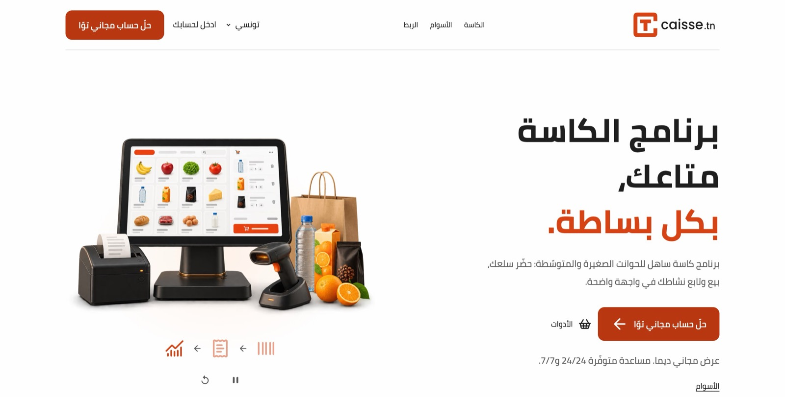

caisse.tn
Point-of-sale software for small shops in Tunisia
caisse.tn is the Jerbien POS under its public name. The software is free for shops, and the site also sells touchscreen tills that arrive set up and ready to sell.
At the counter, cashiers scan barcodes, sell by the piece or by weight, park a basket and come back to it, and keep selling when the internet drops. Owners import their catalogue from Excel, compare sales by period, product or cashier, and run several shops from one account.
What I built
The Flutter POS that runs on Android, Windows and Linux tills, the customer-facing display, the TypeScript and PostgreSQL backend, and the web back office, in Tunisian Arabic, French and English.
Flutter, Dart, TypeScript, Node.js, PostgreSQL, Nuxt